Maymesters are faculty-led summer courses abroad. The computer science department runs two, in different years, both with no prerequisites and open to students in any major: COMP 106 in Japan, new for summer 2027, and COMP 105 in the United Kingdom.
Robotics in Japan follows the development of robots from the mechanical automata of the Edo period to today’s humanoid robots. Students learn the fundamentals of mobile robotics (sensors, obstacle avoidance, planning and navigation) and program small educational robots in Scratch or Python. No programming experience is needed.
COMP 106 is part of the four-week Japan Maymester, Rhodes Summer: Japanese Technology & Media. Students take two courses back to back: MST 288, a media studies course taught by Dr. Ricardo Martins, then COMP 106, taught by Dr. Brian Larkins. The program is based in Tokyo, with excursions to Kyoto, Nagoya and Osaka. Planned visits include the National Museum of Nature and Science, the Toyota Commemorative Museum of Industry and Technology, the Chiba Institute of Technology’s robotics exhibit at Tokyo Skytree, and Miraikan.
Program details and application
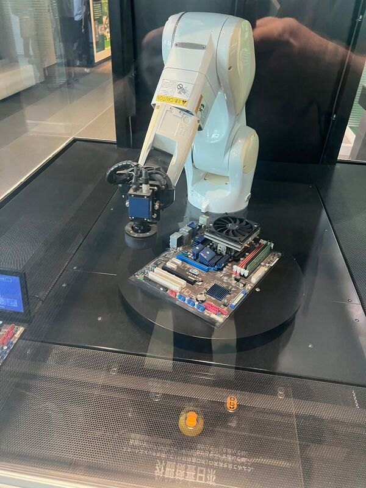
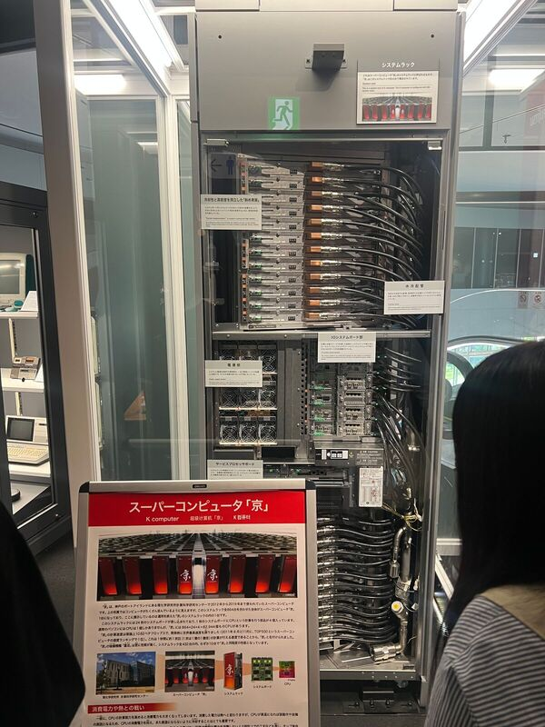
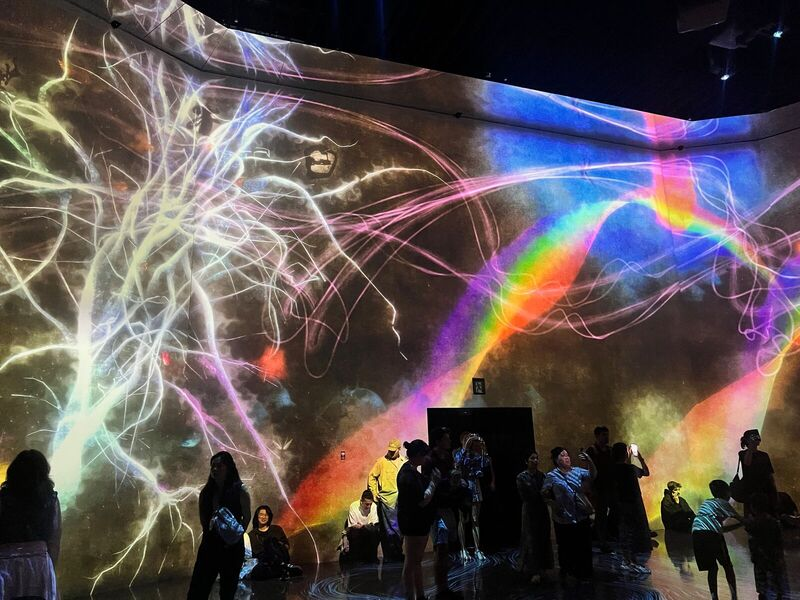
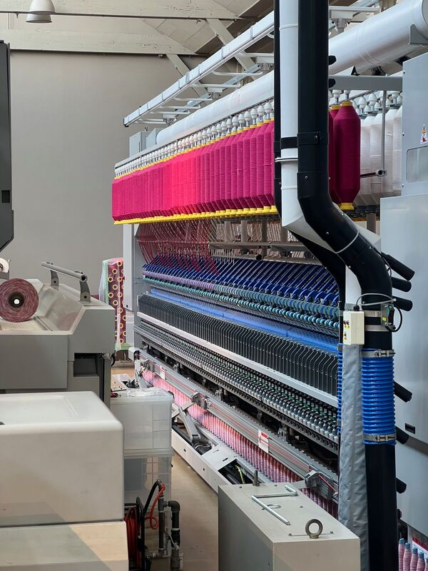
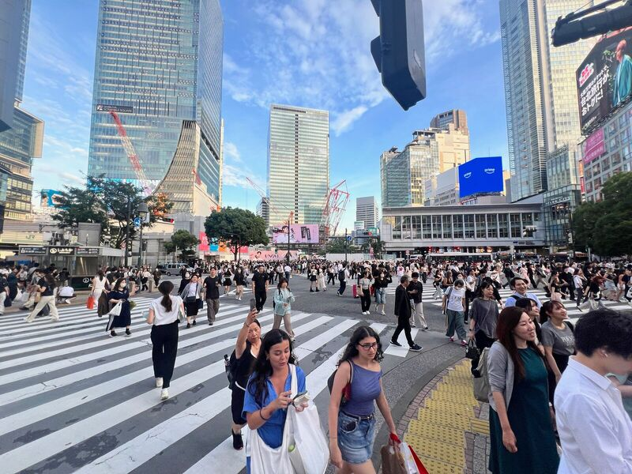
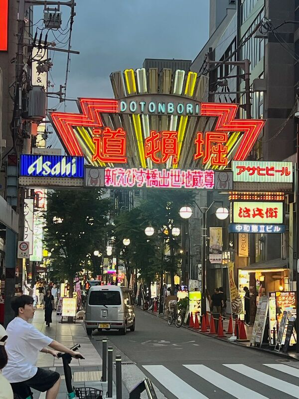
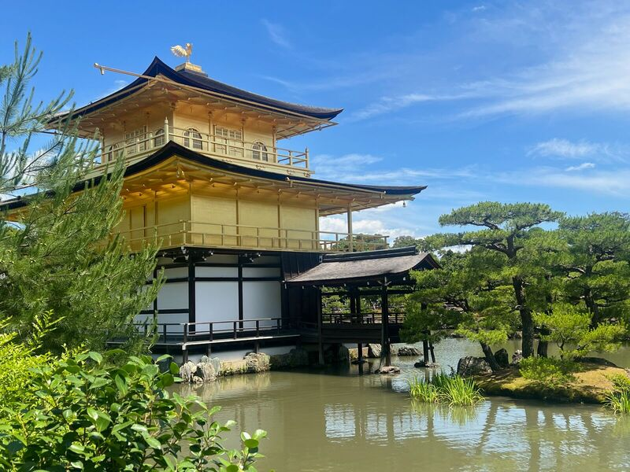
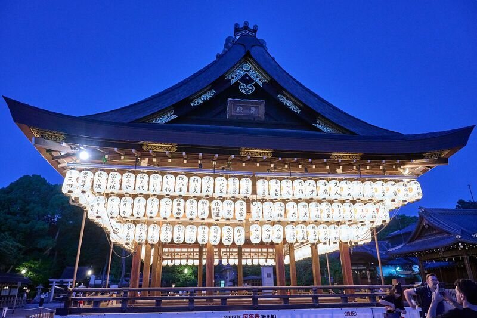
COMP 105 introduces the foundations of computing, both in theory and in the earliest machines. Lectures cover the theory of computation, Turing machines, and how computers are built from digital logic, along with the work of Alan Turing and John von Neumann. Over 21 days based at Harlaxton Manor, students visit sites in Milton Keynes, Cambridge, London and Edinburgh to see early programmable machines: Babbage’s Difference Engine, the Jacquard loom, and the Bombe and Colossus at Bletchley Park and The National Museum of Computing.
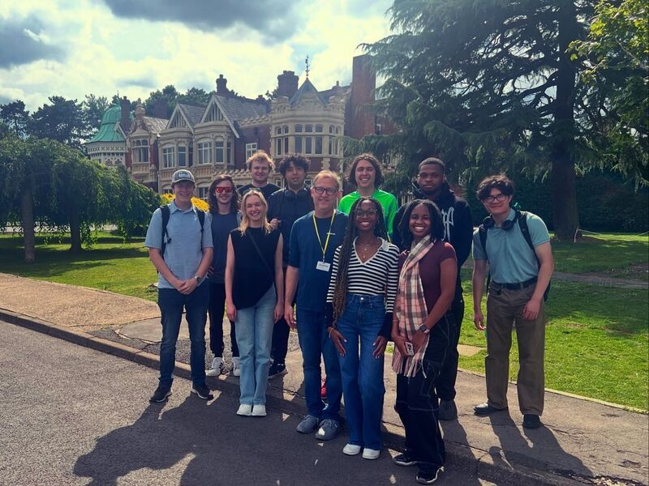
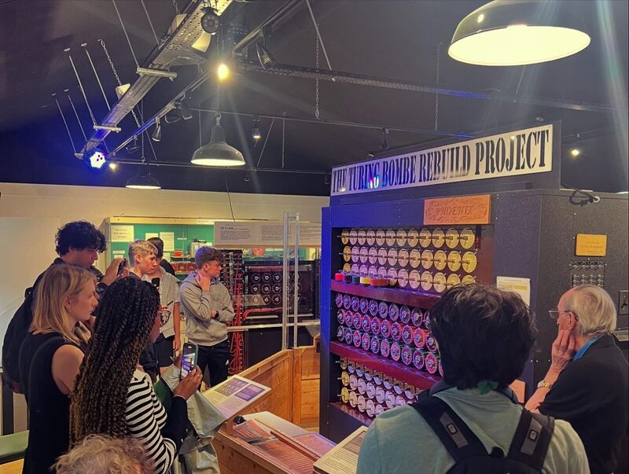
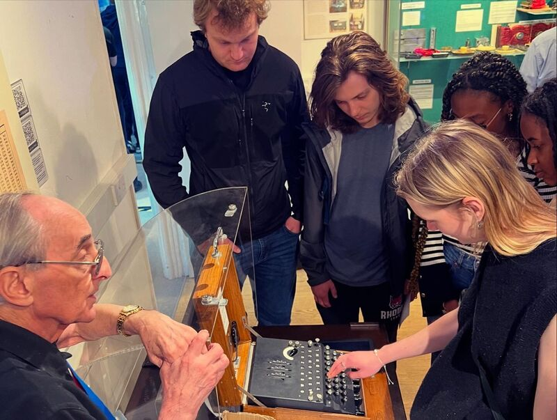
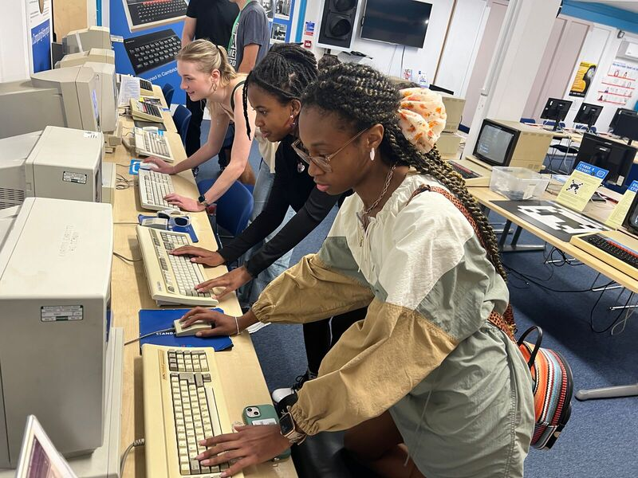
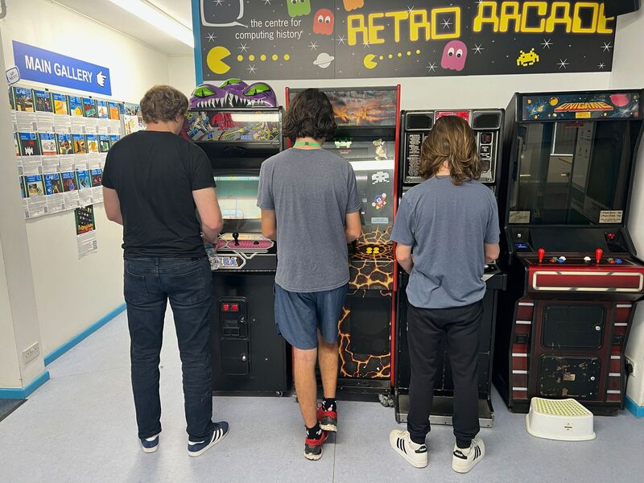
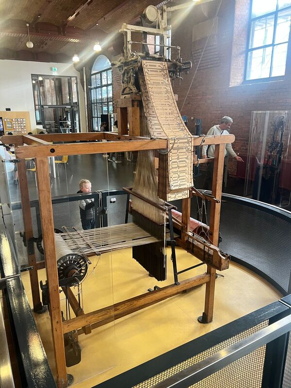
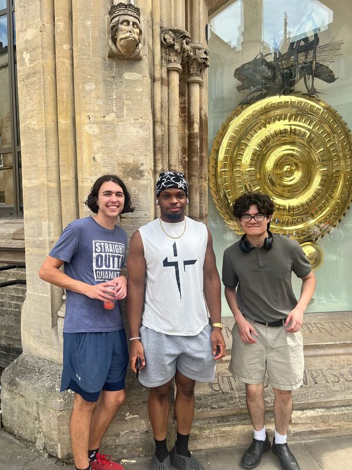
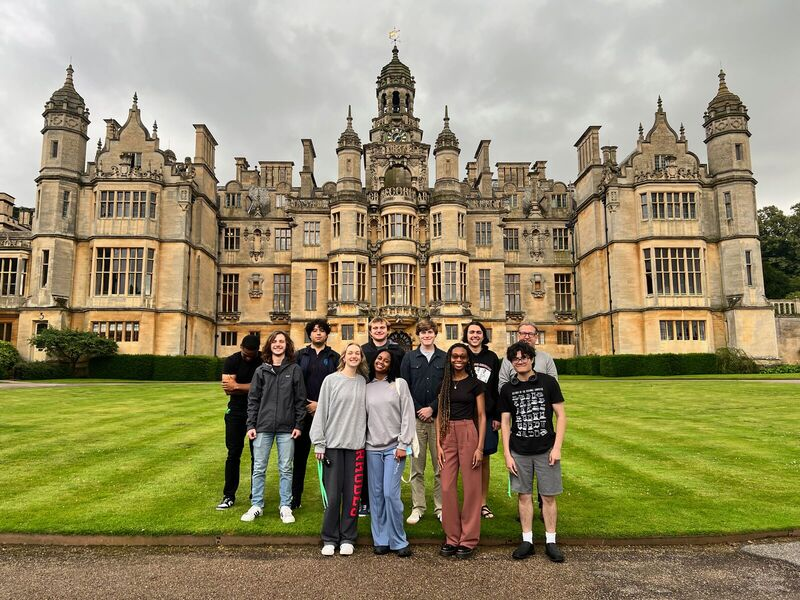
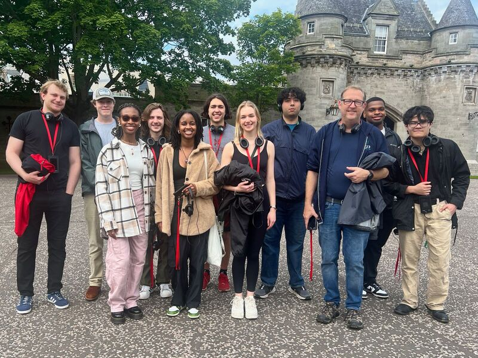